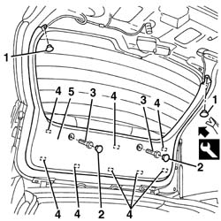

7015A06 tail-gate upper interior panel-r r
- Path
- Procedures > 70 FITTINGS > 7015 TAILGATE/ > 7015A tailgate assembly > 7015A06 tail-gate upper interior panel-r r
- Kind
- repair procedure (removal / refitting; the operation number is the code)
- Applies to
- all engines; all production periods
- Interactive page
- https://sloeber94.github.io/elrnDB-a156/en/#/3238704
Applies to: all engines; all production periods; only with equipment: Station Wagon
 Removing
Removing
 Refitting
Refitting7040G36 BULB HOLDER FOR LOAD CARRYING COMPARTMENT lighting on tailgate - R.R.
7015A05 tail-gate lower interior panel-r r
1. Release the retaining buttons using the special tool.
 | Name | Country |
|---|---|---|
1 | Scraper blade | 1.823.015.000 |
2. Remove the bolts covers.
3. Unscrew the panel retaining bolts.
4. Release the inner retainers using the special tool.
| Name | Country |
|---|---|---|
4 | Scraper blade | 1.823.015.000 |
5. Recover the panel.

Applies to: all engines; all production periods; only with equipment: Station Wagon
Refitting
RemovingCheck that the panel is undamaged.
Position the panel and engage the inner retainers.
Tighten the retaining bolts.
Fit the covers.
Engage the retaining buttons.
7015A05 tail-gate lower interior panel-r r
7040G36 BULB HOLDER FOR LOAD CARRYING COMPARTMENT lighting on tailgate - R.R.
Topics linked from this page (2)
- 7015A05 tail-gate lower interior panel-r r
- 7040G36 BULB HOLDER FOR LOAD CARRYING COMPARTMENT lighting on tailgate - R.R.
Topics that link to this page (10)
- 5550D16 third stop light - r+r
- 7015A04 tailgate interior panel - r+r
- 7035B12 Tailgate rearscreen (bonded type) WINDOW GLASS - R.R. - Includes. cleaning edges of glass and housing in tailgate
- 7035B16 Tailgate windscreen (bonded type) WINDOW GLASS - R.R. - Includes. cleaning housing in tailgate
- 7095B66 TAILGATE LEFT integrated WIRING - R.R.
- 7095B68 TAILGATE RIGHT incorporated WIRING - R.R.
- 7095B72 CONTROL UNIT FOR RADIO AERIAL IN HEATED REAR WINDSCREEN - R.R.
- 7095B76 Rearscreen washer JET. - R.R. clean and/or adjust
- 7210E56 R.R. TAILGATE
- 7210G76 rear spoiler